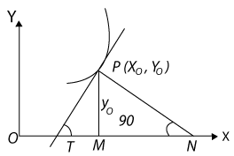

Let y = f(x) be the equation of a curve, and let \( P(x_0, \ y_0) \) be a point on it. Let PT be the tangent, PN the normal and PM the perpendicular to the x-axis (Fig. 1).
The slope of the tangent to the curve y = f(x) at P is given by
\( \left(\frac{dy}{dx}\right)_{(x_0, \ y_0)} \)
Thus the equation of the tangent to the curve y = f(x) at \( (x_0, \ y_0) \) is
\( y - y_0 = \left(\frac{dy}{dx}\right)_{(x_0, \ y_0)} (x - x_0) \)
Since PN is perpendicular to PT, it follows that if \( \left ( \frac{dy}{dx} \right )_{(x_0, \ y_0)} \neq 0 \) , the slope of PN is
\( = \frac{1}{\left ( \frac{dy}{dx}\right )_{(x_0, \ y_0)}} = - \left ( \frac{dx}{dy}\right)_{(x_0, \ y_0)} \)
Hence the equation of the normal to the curve y = f(x) at \( (x_0, \ y_0) \) is
\( y - y_0 = - \left ( \frac{dy}{dx}\right )_{(x_0, \ y_0)} (x - x_0) \)
The equation of the normal parallel to the x-axis is \( y = y_0 \) (i.e., when \( \left ( \frac{dy}{dx} \right )_{(x_0, \ y_0)} = 0). \) The length of the tangent at \( (x_0, \ y_0) \) is PT, and it is equal to
\( = | y_0 \ cosec \theta| = | y_0 | \sqrt{1 + cot^2 \theta} \)
\( = | y_0 | \sqrt{1 + \left [ \left ( \frac{dx}{dy} \right )_{(x_0, \ y_0)} \right]^2} \)
The length of the normal is PN and it is equal to
\( = | y_0 \ sec \theta| = |y_0| \sqrt{1 + \left [ \left ( \frac{dy}{dx} \right )_{(x_0, \ y_0)}\right ]^2} \)If the curve is represented by x = f(t) and y = g(t), then
\( \frac{dy}{dx} = \frac{g'(t)}{f'(t)} \)
where \( g'(t) = \frac{dy}{dt} \) and \( f'(t) = \frac{dx}{dt}. \) In this case, the equations of the tangent and the normal are given by
\( y - g(t) = \frac{g'(t)}{f'(t)} [x - f(t)] \)
and [y - g(t)] g'(t) + [x - f(t)] f'(t) = 0 respective
The angle of intersection of two curves is defined as the angle between the two tangents at the point of intersection. Let y = f(x) and y = g(x) be two curves, and let \( P(x_0, \ y_0) \) be their point of intersection. Also, let \( \Psi \) and \( \psi \) be the angles of inclination of the two tangents with the x-axis, and let \( \theta \) be the angle between the two tangents. Then
\( tan \theta = \frac{tan \psi - tan \Psi}{1 + tan \psi tan \Psi} = \frac{g'(x) - f'(x)}{1 + f'(x) g'(x)} \)
The equation of the tangent at \( (x_0, \ y_0) \) to the curve y = f(x) is given by
\( y - y_0 = \frac{dy}{dx} \Big]_{(x_0, \ y_0)} \ (x - x_0) \)
If \( \frac{dy}{dx} \) does not exist at the point \( (x_0, \ y_0) \) , then the tangent at this point is parallel to the y-axis and its equation is \( x = x_0 \)
If tangent to a curve y = f(x) at \( x = x_0 \) is parallel to x-axis, then \( \frac{dx}{dy} \Big]_{x = x_0} = 0 \)
Equation of the normal to the curve y = f (x) at a point \( (x_0, \ y_0 ) \) is given by
\( y - y_0 = \frac{-1}{\frac{dy}{dx} \Big]_{(x_0, \ y_0)}} (x - x_0) \)
If \( \frac{dy}{dx} \) at the point \( (x_0, \ y_0) \) is zero, then equation of the normal is \( x = x_0 \)
If \( \frac{dy}{dx} \) at the point \( (x_0, \ y_0) \) does not exist, then the normal is parallel to x-axis and its equation is \( y = y_0 \)
Find the slope of the tangent to the curve \( y = x^3 - x \) at x = 2.
Solution
The slope of the tangent at x = 2 is given by
\frac{dy}{dx} \Big]_{x - 2} = 3x^2 - 1 \Big]_{x = 2} = 11
Find the point at which the tangent to the curve \( y = \sqrt{4x - 3} - 1 \) has its slope \( \frac{2}{3} \)
Solution
Slope of tangent to the given curve at (x, y) is
\frac{dy}{dx} = \frac{1}{2} (4x - 3)^{- \frac{1}{2}} 4 = \frac{2}{\sqrt{4x - 3}} \\[3pt]
\text{The slope is given to be} \ \frac{2}{3} \\[3pt]
So \ \frac{2}{\sqrt{4x - 3}} = \frac{2}{3} \\[3pt]
or \ 4x - 3 = 9 \\[3pt]
or \ x = 3 \\[3pt]
Now \ y = \sqrt{4x - 3} - 1 \ So \ when \ x = 3, \ y = \sqrt{4(3) - 3} - 1 = 2
Therefore, the required point is (3, 2).
Find the equation of all lines having slope 2 and being tangent to the curve \( y + \frac{2}{x - 3} = 0 \)
Solution
Slope of the tangent to the given curve at any point (x,y) is given by
\( \frac{dy}{dx} = \frac{2}{(x - 3)}^2 \)
But the slope is given to be 2. Therefore
\( \begin{align} \frac{2}{(x - 3)}^2 = 2 \\\\[3pt]
or \ 9x - 3)^2 = 1 \\\\[3pt]
or \ x - 3 = \pm 1 \\\\[3pt]
or \ x = 2, \ 4 \end{align} \)
Now x = 2 gives y = 2 and x = 4 gives y = - 2. Thus, there are two tangents to the given curve with slope 2 and passing through the points (2, 2) and (4, - 2). The equation of tangent through (2, 2) is given by
y - 2 = 2(x - 2)
or y - 2x + 2 = 0
and the equation of the tangent through (4, - 2) is given by
y - (-2) = 2(x - 4)
or y - 2x + 10 = 0
Find the equations of the tangent and normal to the curv \( x^{\frac{2}{3}} + y^{\frac{2}{3}} = 2 \) at (1, 1).
Solution
\( Differentiating \ x^{\frac{2}{3}} + y^{\frac{2}{3}} = 2 \) with respect to x, we get
\( \begin{align} \frac{2}{3} x^{\frac{-1}{3}} + \frac{2}{3} y^{\frac{-1}{3}} \frac{dy}{dx} = 0 \\\\[3pt]
or \ \frac{dy}{dx} = - \left( \frac{y}{x} \right )^{\frac{1}{3}} \end{align} \)
Therefore, the slope of the tangent at (1, 1) is \( \frac{dy}{dx} \Big]_{(1, \ 1)} = - 1 \)
So the equation of the tangent at (1, 1) is
y - 1 = - 1 (x - 1) or y + x - 2 = 0
Also, the slope of the normal at (1, 1) is given by
\( \frac{-1}{\text{slope of the tangent at (1, 1)}} = 1 \)
Therefore, the equation of the normal at (1, 1) is
y - 1 = 1 (x - 1) or y - x = 0
Find the equation of tangent to the curve given by
\( x = a \ sin^3 \ t, \ y = b \ cos^3 \ t \) ...... (1)
at a point where \( t = \frac{\pi}{2} \)
Solution
Differentiating (1) with respect to t, we get
\( \begin{align} \frac{dx}{dt} = 3a \ sin^2 \ t \ cos \ t \ and \ \frac{dy}{dt} = - 3b \ cos^2 \ t \ sin \ t \\\\[3pt]
\frac{dy}{dt} = \frac{\frac{dy}{dt}}{\frac{dx}{dt}} \\\\[3pt]
= \frac{- 3b \ cos^2 \ t \ sin \ t }{3a \ sin^2 \ t \ cos \ t} \\\\[3pt]
= \frac{- b \ cos t}{a \ sin \ t} \end{align} \)
Therefore, slope of the tangent at \( t = \frac{\pi}{2} \) is
\( \frac{dy}{dx} \Big]_{ t = \frac{\pi}{2} } = \frac{- cos \ \frac{\pi}{2}}{a \ sin \ \frac{\pi}{2}} \)
Also, whent \( t = \frac{\pi}{2} \) , x = a and y = 0. Hence, the equation of tangent to the given curve at \( t = \frac{\pi}{2} \) , i.e., at (a, 0) is
y - 0 = 0 (x - a), i.e., y = 0.